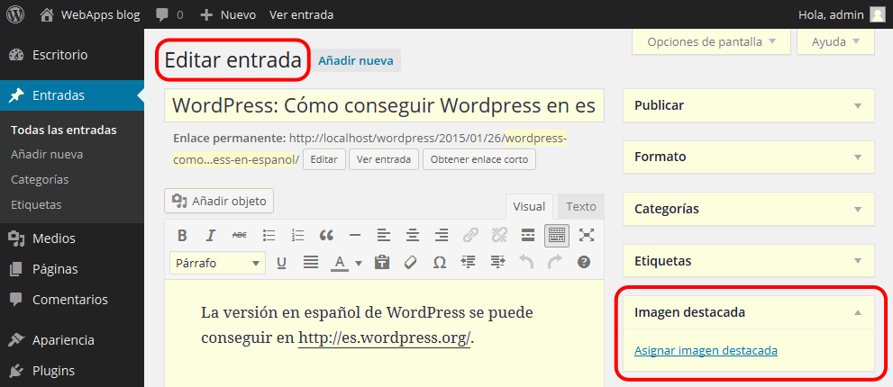
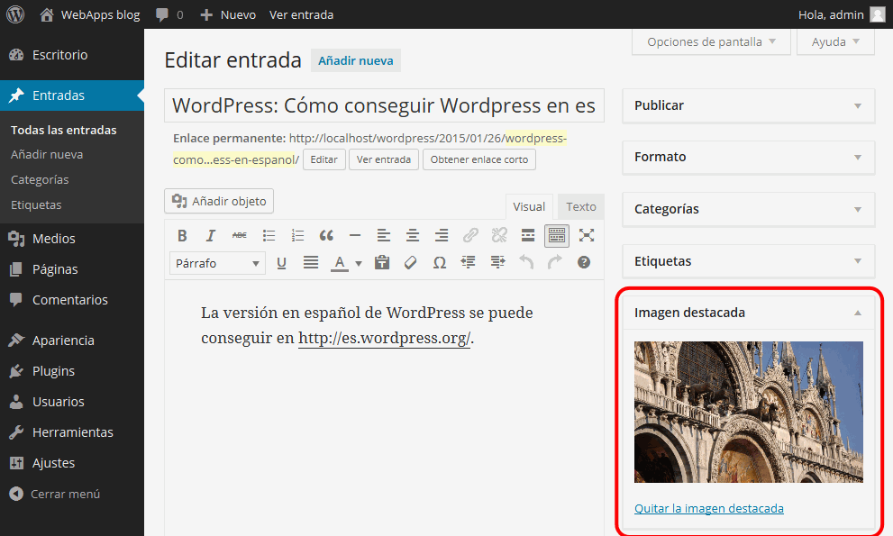

Estas soluciones están pendientes de actualizar a la versión WordPress 5.0.
Estas soluciones están pendientes de actualizar a la versión WordPress 5.0.
En esta lección se proponen soluciones detalladas de los ejercicios (4) de WordPress. Se recomienda intentar realizarlos primero sin recurrir a estas soluciones.


html, div.custom-header, div.site-content-contain, footer{
background-color: hsl(360, 75%, 70%);
}
div.navigation-top {
background-color: hsl(360, 75%, 50%);
color: white;
}
div.navigation-top ul#top-menu a {
color: white;
}
div.navigation-top ul#top-menu ul.sub-menu li.menu-item a {
color: black;
}
div#content {
background-color: hsl(360, 75%, 90%);
}
Referencias:
/*
Theme Name: Twenty Seventeen Child
Theme URI: https://wordpress.org/themes/twentyseventeen/
Template: twentyseventeen
Author: TU NOMBRE
Author URI: TU PÁGINA WEB
Description: Tema hijo de Twenty Seventeen
Version: 1.0
Updated: 2017-02-06
License: GNU General Public License v2 or later
License URI: http://www.gnu.org/licenses/gpl-2.0.html
*/
<?php
// Exit if accessed directly
if ( !defined( 'ABSPATH' ) ) exit;
// BEGIN ENQUEUE PARENT ACTION
// AUTO GENERATED - Do not modify or remove comment markers above or below:
if ( !function_exists( 'chld_thm_cfg_parent_css' ) ):
function chld_thm_cfg_parent_css() {
wp_enqueue_style( 'chld_thm_cfg_parent', trailingslashit( get_template_directory_uri() ) . 'style.css', array( ) );
}
endif;
add_action( 'wp_enqueue_scripts', 'chld_thm_cfg_parent_css', 10 );
// END ENQUEUE PARENT ACTION
Nota: El ejemplo anterior de functions.php es el que genera el plugin Child Theme Configurator.
Para obtener el resultado propuesto, la hoja de estilo podría ser la siguiente:
body.has-header-image .site-description {
color: yellow;
}
.page-title {
border-bottom: green 3px solid;
}
article.post {
border: green 3px solid;
margin-bottom: 10px;
padding: 5px;
}
h2.entry-title {
font-weight: bold;
text-shadow: 5px 5px lightgrey;
}
Para obtener el resultado propuesto, la hoja de estilo podría ser la siguiente:
section.widget {
border: green 3px solid;
border-radius: 10px;
margin-bottom: 10px;
padding-bottom: 10px;
}
section.widget ul {
padding: 0 5px;
}
h2.widget-title {
border-top-left-radius: 5px;
border-top-right-radius: 5px;
margin-bottom: 10px;
padding: 5px;
background-color: green;
color: white;
font-size: 1rem;
}
<div class="page-content">
<p style="text-align: center">
<img class="alignnone size-full wp-image-102" src="http://192.168.1.4/wordpress/wp-content/uploads/2016/09/oops-200.png"
alt="" width="225" height="200" />
</p>
<p style="color: red"><?php _e( 'It looks like nothing was found at this location. Maybe try a search?', 'twentyseventeen' ); ?></p>
<?php get_search_form(); ?>
</div><!-- .page-content -->
/* =Theme customization starts here
-------------------------------------------------------------- */
@import url(http://fonts.googleapis.com/css?family=Montserrat+Alternates);
@import url(http://fonts.googleapis.com/css?family=Over+the+Rainbow);
p.site-title a, h1.site-title a {
font-family: "Montserrat Alternates";
}
article h1, article h2 {
font-family: "Over the Rainbow";
}
 Por escribir
Por escribir
 Por escribir
Por escribir